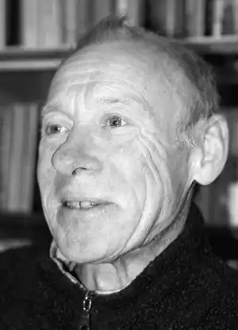
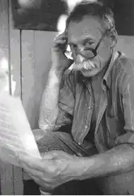

ТАЛАЛАЙ ЛЕОНІД МИКОЛАЙОВИЧ
1941 (11.11)
Життя і творчість Леоніда Миколайовича Талалая, відомого українського поета, лауреата державної Шевченківської премії з літератури, тісно пов'язані з донецьким краєм. Тут він почав свою художню діяльність, видавши перші поетичні збірки "Журавлиний леміш", "Вітрила тривоги", "Осінні гнізда", "Не зупиняйся, мить!", "Допоки твій час" та ін. Відомий літературний критик Степан Крижанівський охарактеризував нашого талановитого земляка як ліричну, схильну до ясної, прозорої, але разом із тим і не скутої традиційної форми, особистість. Справді, ліриці поета властиве загострене емоційне відчуття часу, бачення його мінливості і швидкоплинності, взаємозв’язок у житті людини її минулого, сучасного та прийдешнього. Ще в часи "розквітлого соцреалізму" твори Леоніда Талалая відзначалися відсутністю заідеологізованих "віршів-паровозів", віршованих політичних схем в оцінках суспільних подій і явищ культури, чим тоді грішило чимало письменників. Поет оспівує сміх малечі, спогади про матір, своїх друзів, красу рідної природи. Відтоптався джміль на конюшні І медові підспівав жнива. От уже і листя, як на плині, за незримі обрії сплива. Це скрипить, похитуючись, хвіртка, Де твої не вичахли сліди… Господи, чому воно так швидко, Господи, куди воно, куди?Помічені проникливим поглядам поета життєві сцени і картини викликають у нього щирий жаль за плинністю життя, за неможливістю затримати хоч на часинку милі серцю і суголосні його душі образи. У своїх віршах лірик звертається також до подій часів Київської Русі, намагається розібратися в нашому складному і суперечливому сьогоденні. Естетичне кредо Леоніда Талалая, здавалося б, легкодоступне читачеві відразу, після першого ж знайомства з його творчістю. Але це тільки перше враження. За простими на перший погляд темами і мотивами лежить висока культура поетичної думки, виваженої і опертої на здобутки таких визначних поетів, як Максим Рильський, Володимир Сосюра, і ще одного нашого донецького земляка, Костя Герасименка, у якого епос і лірика органічно переплелися. У критичних виступах поета на сторінках "Літературної України" ми знаходимо гострі застереження – і не тільки поетам – від втрати суспільством високих духовних цінностей. Поет із розумінням і гіркотою вболіває за двозначним становищем сучасної творчої молоді, яка "відвоювала для себе місце під сонцем… біля "порожнього корита". Але така сьогодні дійсність. І все ж у письменника найціннішим є його палке художнє слово, що промовляє до читача талановито, відверто, щиро. Цю якість ми і відзначаємо у творчості нашого поета-земляка Леоніда Талалая, глибокого лірика з ясним і філософськи проникливим поглядом на життя, як визначальну.